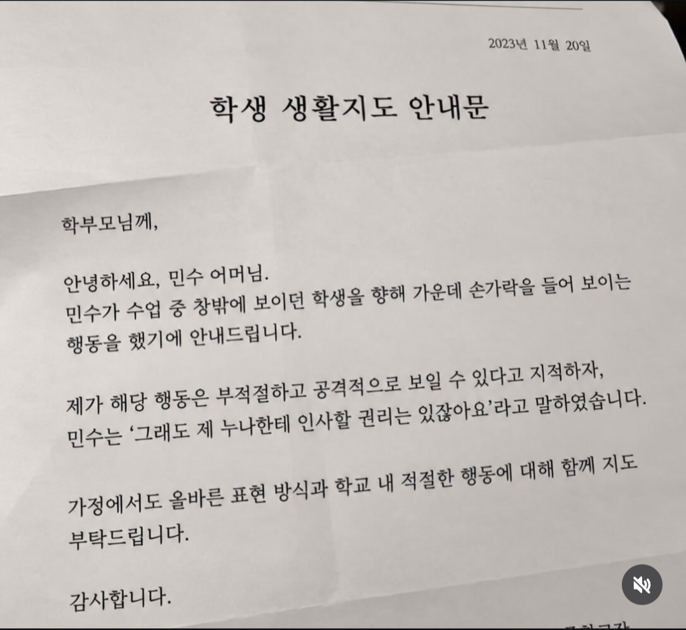

학생 생활지도 안내문.jpg
댓글
친누나한테 한건 ㅇㅈ이긴한데.. ㅋㅋㅋㅋㅋ
이걸 어케 설명해야 할지 ㅋㅋ
ㅋㅋ 뭐 그런걸 가지고. 남매가 친하구만
'수업' 중에 공적인 자리 공적인 공간에서 ;;

ㅅㅂ 나는 누나가 엄마한테 쓴 조크식 가정통신문인줄 알았는데
윗댓글 어질어질한 새끼들 많네..
아직 어리니까 할 수는 있지ㅋㅋㅋㅋㅋ 그래도 밖에서는 그러지 말라고 가르쳐야 할듯
ai 너무 티난다
애시당초 글자가 종이랑 가지런하지가 않잖아
누나한테 밖에서 아는체를 했다고?? ㅈㄴ 사이좋은 남매인데 왜그래
수업중 창밖에 보이는사람한테 인사..? 주작
본인이 사랑하는 여자가 잘보일수도있지... 증거로 뻑유라고 보내잖아...
그냥 보고 웃고 말아 뭐 여기서 시시비비를 가려
개드립에서는 "그냥 웃어"이거 지키는게 남북통일보다 어려워서 안돼
내 친구중에 서로 인사할때 가운데손가락 들고 휘휘 하는게 우리만의 인사인놈 있었는데 갑자기 생각나네.
좀 더 반갑거나 헤어짐이 아쉬우면 뻐큐하고 팝핀까지 춤
그렇솝니까… 교육하겠솝니다
아니 씹 최소한 직접 프린터로 출력은 해라 이게 뭐야ㅋㅋㅋㅋㅋㅋㅋㅋ
Ai잖아
이건 노잼이다
뭐... 사실 나도 사전에 부모님이랑 의견조율하고 약간 짜고치는 고스톱 느낌으로 저런거 발송한 적은 있음.
부모님들끼리도 친한 사이인 두 놈들이 패드립이 너무 심해서... 자필로 자기가 한 패드립 적게하고 상대방 인편으로 상대방 부모 싸인 받아오세 한 다음
학교로 모셔서 면전에서 그대로 재현하라고 함ㅋㅋㅋㅋ
당연히 못하고 울며불며 죄송하다 그러고 추후 지도는 부모님들 손에 맡김(까지 조율된 내용)
있을 수도 있겠다 싶긴 한데 진짜라고 생각하진 않음 짤은